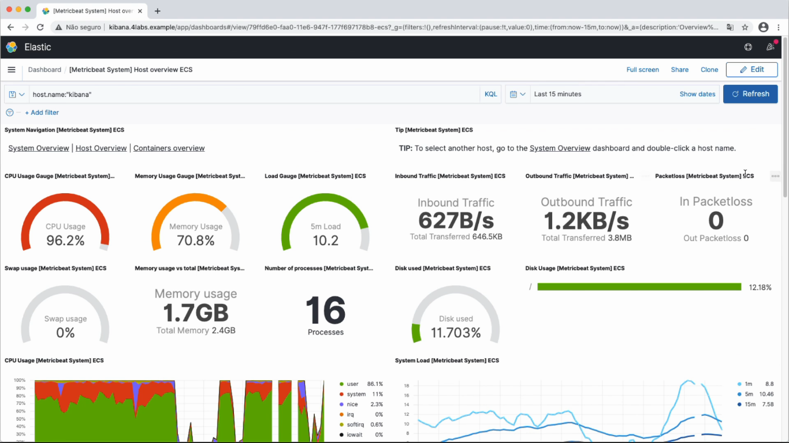
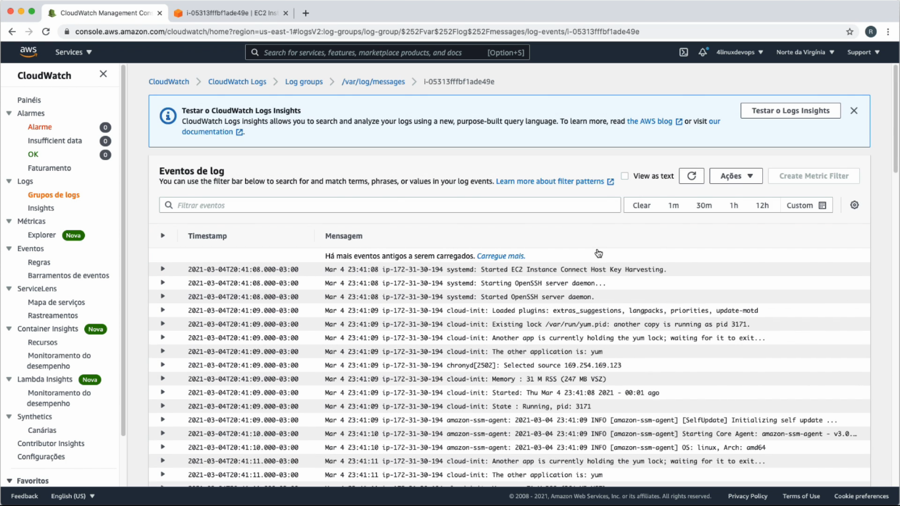

Ambiente e materiais
Github do projeto- Instalar Virtualbox, com extension pack
- Instalar Ansible, Git e Vagrant:
sudo apt update && sudo apt install software-properties-common ansible git vagrant - Instalar Vagrant: Automação de VMs através de arquivos de código em repositório
- Baixar .deb;
- No diretório das VMs, usar comando 'vagrant status' para verificar VMs para uso;
- Comando 'vagrant up' iniciará todas as VMs, 'vagrant halt' desligará VMs. Arquivo 'environment.yaml' possuirá detalhes das VMs. Usuário padrão do Vagrant é 'vagrant'.
Laboratório:
Serão criadas 3 VMs CLI através do Vagrant:
| Nome | vCPUs | Memória RAM | IP | SO |
|---|---|---|---|---|
| webserver-audit | 1 | 2048MB | 172.16.0.11 | centos-7.3-x86_64 |
| graylog-audit | 1 | 2560MB | 172.16.0.12 | ubuntu-18.04-amd64 |
| kibana-audit | 1 | 2560MB | 172.16.0.13 | debian-10-amd64 |
- Baixe o repositório no link acima e o extraia
- Acesse a pasta '516-master' e execute o comando: vagrant up
- Alguns comandos Vagrant:
- Subir ambiente: vagrant up
- Ver VMs: vagrant box list
- Ver ambiente geral: vagrant global-status
- Suspender VMs: vagrant suspend ('resume' para retomar)
- Reiniciar VM: vagrant reload nomeVM
- Desligar VMs: vagrant halt
- Acessar VM: vagrant ssh nomeVM (Use ctrl+d para sair)
Introdução ao sistema de logs
A utilização de logs nas rotinas profissionais é essencial para gerenciar o passo a passo do funcionamento dos sistemas. Assim como verificar problemas de forma detalhada e acessos indevidos/atividades não autorizadas. Entre os serviços de administração de logs, tem-se:
- syslog: Mais antigo, não suporta a TCP/UDP em logs remoto, log criptografado e armazenamento de log em DB;
- syslog-ng: Possui tais suportes, possuindo também versão enterprise;
- rsyslog: Mais recente, possui versão enterprise e community.
Elementos de configuração:
- Facility: Identificação de qual serviço o log será enviado ao qual será registrado entre os demais: auth, authpriv, cron, ftp, local[0-7], lpr (Impressão), mail, news, user, kern (Kernel), syslog, daemon;
- Nível: Nível de criticidade do registro do serviço ao log: Emerg, Crit, Warn, Info, Alert, Err, Notice, Debug;
- Arquivo: Onde a informação será armazenada, em '/var/log/nomeServ.nivel' (Ex: /var/log/mail.err);
- Padrões: Arquivos criados pelo próprio syslog automaticamente;
- lastlog (/var/log/lastlog): Logs dos últimos logins de usuários;
- dmesg (/var/log/dmesg ou comando dmesg): Logs de conexões com hardwares externos, através do reconhecimento com o kernel Linux. Informações sobre hardware;
- messages: Principais logs do sistema com relação aos serviços e afins;
- syslog: Logs de arquivos e serviços que não possuem arquivo específico para tal.
Logs padrão no Linux
Debian (/var/log/):
- alternatives.log
- apt
- auth.log
- btmp
- daemon.log
- debug
- messages (Ubuntu não possui, alternativa é o comando syslog. Também presente no Debian)
CentOS (/var/log/):
- anaconda
- audit
- boot.log
- btmp
- chrony
- cron
- messages (Informações sobre serviços)
- yum.log
Comandos de log:
- dmesg: Exibe arquivo /var/log/dmesg. Logs referentes à conexão de hardware externo com kernel
- last: Log dos últimos logins e logouts no sistema
- lastlog: Log dos últimos logins no sistema
- lastb: Log das tentativas mal sucedidas de login no sistema
Personalização de logs:
- Mostrar configuração padrão de logs: cat/etc/rsyslog.conf
- Para criar configuração personalizada, deve-se ir ao diretório '/etc/rsyslog.d/'. Nele, criamos arquivo 'cron.conf'. Nesse, inserir o seguinte conteúdo:
- Sintaxe: facility.nivel diretorioGravacao
- cron.* /var/log/cron.log
(Asterisco ativa todos os níveis para serem registrados no log)
(Arquivo cron.log será criado)
- Para confirmar o rsyslog, deve-se reiniciar o serviço: sudo systemctl restart rsyslog
- Ao realizar o comando 'crontab -l' e verificar o cron.log, verá o log: mês dia horário nomeMaquina serviço[processo]: (usuario) LIST (agendamentosdeusuario)>
Rotação de logs
Log Rotate: Ferramenta que gerencia a organização dos logs por tamanho/tempo. Verificará o tamanho do log, dividindo-o e compactando-o. Para manter quantidade personalizada de arquivos de logs de determinado serviço, utiliza-se a rotação de logs, executado pelo crontab. Arquivos de logrotate criados automaticamente pelo sistema ficam em '/etc/logrotate.d/': Arquivos como alternatives, apt, dpkg, rsyslog, unattended-upgrades.
Configuração padrão dos arquivos em logrotate:
- weekly (Agendamento de rotates - hourly, daily, weekly ou monthly)
- rotate 4 (Quantidade de arquivos de logs que devem ser mantidos)
- create (Criar arquivo de log quando o rotacionamento é feito)
- compress (Comprimir arquivo de log para formato gzip - .gz)
- missingok (Não fará roticionamento se o arquivo não existir)
- notifempty (Não fará roticionamento de arquivo vazio)
Criar rotate para arquivo criado acima, cron.log, Criando, em /etc/logrotate.d/, arquivo 'cron', com o conteúdo:
/var/log/cron.log {
daily
rotate 4
compress
delaycompress (Compacta a partir do 2º logrotate)
size 1M (Fará o roticionamento quando o arquivo atingir 1M)
missingok
notifempty
create 644 root root (Criará novos arquivos / permissão / usuario / grupo)
}
O arquivo cron.log estará no rsyslog, caso isso aconteça, comente a linha (#) de sua referência no arquivo /var/log/rsyslog (#/var/log/cron.log). Quando o arquivo cron.log passar do tamanho definido, pode-se fazer o logrotate dele ou aguardá-lo automaticamente, de acordo com o provisionamento definido. Para realizar o logrotate forçadamente, use o comando logrotate -f /etc/logrotate.conf, que irá ler as configurações definidas nos arquivos em /etc/logrotate.d/ e, se preciso, executará o logrotate. Os arquivos envolvidos em logrotate ficarão em /var/log, onde os arquivos estarão com nomeclatura nomeArquivo.log.1 e, caso houver atributo delaycompress, na 2ª execução do logrotate aparecerá o arquivo nomeArquivo.log.2.gz. Respectivamente, a cada próxima execução, será criado o arquivo nomeArquivo.log.3.gz, onde manterá somente os últimos X arquivos, de acordo com a quantidade definida no 'rotate' do mesmo (Ex: rotate 4 manterá somente os últimos 4 arquivos). Automaticamente, o período padrão de execução do logrotate está definido em /etc/crontab, onde haverá os diretórios apontados em /etc/cron.daily, /etc/cron.weekly, etc, que possuirão os arquivos com incluídos. Com 'cat /etc/crontab' as 2 primeiras colunas representam, respectivamente, quais minutos, hora, dia... do período ocorrerá o logrotate.
Resolvendo problemas através de logs:
- Cenário 1 (Erro de configuração de serviço): Exemplo, um comando errado no arquivo /etc/rsyslog.conf (Após restart do serviço, verificar com 'systemctl status rsyslog', ou verificar arquivo /var/log/syslog)
- Cenário 2 (Erro de autenticação no sistema através de um usuário, de máquina à outra):
- PS: mail.info /var/log/infomail.log enviará informações de serviços de email para o arquivo de log especificado
- Usuário, via VM1, acessa VM2: sshpass -p "senhaErrada" ssh -l nomeUsuario nomeVM
- Na VM2, verificar se houve tentativas mal sucedidas de acesso: sudo grep Failed /var/log/secure --color
Auditoria de acessos ao sistema
Audit: Serviço que permite gerar logs de sistema através de regras. Instalar Audit: sudo apt install auditd
- Ver status: sudo auditctl -s
- Listar regras: sudo auditctl -l
- Criar regra de auditoria de log em arquivo: sudo auditctl -w /diretorio/arquivo -p rwxa (-p permissões)
- Ex: sudo auditctl -w /etc/passwd -p rwxa
- Ler o arquivo /etc/passwd (cat passwd)
- Verificar se audit pegou a leitura do arquivo: sudo grep -i passwd /var/log/audit/audit.log
- Também pode-se ler todo o arquivo de log gerado pelo audit: sudo cat /var/log/audit/audit.log
- Ex: sudo auditctl -w /etc/passwd -p rwxa
- Remover regra: sudo auditctl -W /diretorio/arquivo
- Ex: sudo auditctl -W /etc/passwd
Regra para execução de syscalls
Syscalls (Chamadas de sistema) é a interface entre aplicação e kernel. Exemplo: Mudança de hora realizada pela aplicação.
Criar regra para auditar mudança do horário do sistema:
- Criar regra para syscall: sudo auditctl -a exit,always -F arch=b64 -S clock_settime -F key=mudarHora (always marca o tempo e grava o registro. exit permite criar evento quando a syscall for encerrada. -F filtro de syscall para arquitetura. -S define o que será registrado. key define variável string)
- Alterar hora do sistema: sudo date --set '2021/01/01 20:00"
- Procurar apontamento no audit.log: sudo grep -i mudarHora /var/log/audit/audit.log (Ou cta nesse arquivo)
- Listar registros syscall: sudo ausyscall --dump (Ver nº do syscall no comando acima e procurá-lo nessa lista)
- Procurar diretamente: sudo ausyscall --dump | grep numSyscall (Ex: 227)
- Remover regra: sudo auditctl -d exit,always -F arch=b64 -S clock_settime -F key=mudarHora
- Verificar se regra foi removida ou não: sudo auditctl -l
Criar regras automaticamente ao iniciar máquina:
Para isso, define-se as regras dentro do arquivo /etc/audit/rules.d/audit.rules
- Criar regra para arquivo: sudo auditctl -w /etc/passwd -p rwxa -k listaUsuarios
- Criar regra para syscall: sudo auditctl -a exit,always -F arch=b64 -S clock_settime -k mudarHora
- Listar regras, para ver se foram criadas: sudo auditctl -l
- Encaminhar lista para final do arquivo audit.rules: auditctl >> /etc/audit/rules.d/audit.rules
- Para efeito, pode-se reiniciar a máquina ou seguir os comandos
- Remover todas regras: sudo auditctl -D
- Listar, para comprovar remoção: sudo auditctl -l
- Reiniciar serviço auditd: systemctl restart auditd
- Listar, para comprovar regras efetivadas: sudo auditctl -l
- Lista de syscalls: Acesse
Analisar logs de auditoria
Para gerar relatórios de logs envolvendo as 2 regras acima, usaremos ausearch e aureport. Ausearch é ideal para comprimir comandos com variáveis. Ausearch é ideal para exibir, em analise de logs, quantidade de falhas na autenticação de usuários por exemplo.
- Acessar arquivo, para pegá-lo no log d arquivo: cat /etc/passwd
- Mudar horário do sistema, para pegá-la no log syscall: date --set "1999/04/11 9:30"
- Ver/Filtrar eventos no arquivo /etc/passwd através ausearch: ausearch -k listaUsuarios
- Ver/Filtrar eventos no syscall hora através do ausearch: ausearch -k mudarHora
- Ver logs específicos (Exemplo crontab) através do ausearch: ausearch -x /usr/bin/crontab
- Mostrar relatório do sistema, através do aureport: aureport --summary
- Mostrar tudo: aureport -f
- Em tempo real: aureport -f | tail -f
- Mostrar relatório de usuários: aureport -m
Auditoria em tempo real
PAM (Pluggable Authentication Modules) são módulos que fazem gerenciamento de logs no Linux, como autenticação, trocas de sessão, digitação, etc. Ele se encontra em /etc/pam.d/. Nele, os arquivos 'common' servem como modelos. Arquivos como 'login' mostram configuração para regras de login. Os arquivos seguem padrão de 4 partes:
[Interação] [Controle] [Módulo de controle] [Parâmetros do módulo]
auth/session optional/sufficient/requisite/required modulo.so delay=3000000
Exemplos:
- auth requisite pam_nologin.so (Se há arquivo /etc/nologin, o root não poderá logar)
- auth requisite pam_time.so (Se há arquivo /etc/security/time.conf, haverá determinados horários para login)
* Required verifica e não bloqueia na 1ª vez carregado, olhando outros módulos para então tomada de decisão. Se os demais módulos bloquearem, aí ele bloqueia também. Requisite bloqueia direto. Sufficient não impactará bloqueios caso o módulo falhe, passando para o próximo módulo.
Exemplo:
pam_tty_audit faz auditoria em logs de tudo o que for digitado no shell, registrando em /var/log/audit/audit.log. Neste caso, usará auditoria em tempo real para verificar o que o root estará digitando no shell.
- A sessão do usuário deverá ser requerida para uso do módulo: Inserir no final do arquivo /etc/pam.d/commom-password, a regra: session required pam_tty_audit.so disable=* enable=root log_passwd
- Adicionar regras de auditorias em /etc/audit/rules.d/audit.rules, para captar todos binários envolvidos com root:
- echo '-a always,exit -F arch=b64 -F euid=0 -s execve' >> /etc/audit/rules.d/audit.rules
- echo '-a always,exit -F arch=b32 -F euid=0 -s execve' >> /etc/audit/rules.d/audit.rules
- Reiniciar audit: systemctl restart auditd
- (Tudo o que o root digitar no shell será registrado no /var/log/audit/audit.log)
Instalar plugin para evitar que o arquivo de registro desse log (/var/log/audit/audit.log) seja outro:
- Instalar: sudo apt install audispd-plugins (Após instalado, criará /etc/audisp/plugins.d/)
- Os arquivos têm configurações, que podem ser ativadas (active), que permitem redirecionar resultados de logs para outros arquivos especificados.
- No arquivo /etc/audisp/plugins.d/syslog.conf, ativar o arquivo com 'active = yes'.
- Editar arquivo /etc/rsyslog.d/50-default.conf, remover comentários das linhas 31, 32, 33 e 34 (*.=info… até mail,news,none ~/var/log/messages)
- Todos logs info serão redirecionados para ~/var/log/messages
- Reiniciar rsyslog e audit: systemctl restart rsyslog && systemctl restart auditd
- Será criado arquivo /var/log/messages, onde ficarão todos logs de info, assim como os logs que registram o que o root escreve no shell (Isso, além do arquivo audit.log primeiramente criado).
- Para retransmitir a outra nível (local, info...):
- Editar /etc/audisp/plugins.d/syslog.conf, alterar ARGS para 'LOG_LOCAL6'
- Editar /etc/rsyslog.d/50-default.conf, alterar, nas linhas 31, 32, 33, 34 propriedade '.none', que impede de gravar logs destes do no arquivo informado (~/var/log/messages). Junto, após 'news.none' informar ';local6.none' (No caso, desabilitar os logs de local6 para serem informados no arquivo messages)
- Reiniciar rsyslog e audit: systemctl restart rsyslog && systemctl restart auditd
- Ver, em /var/log/audit/audit.log, que os logs dos comandos que o root digitou no shell foram registrados
- Nada disso foi registrado em /var/log/messages
Logs remoto
A ideia de centralizar logs em um servidor para facilitar a análise e backups. O rsyslog, em /etc/rsyslog.conf, fornece disposição de logs remoto através de TCP/UDP na porta 514 ($InputTCPServerRun). Pode-se alterar tal porta, informando-a nos arquivos abaixo (Ex: Recebimentos de logs em TCP porta 514 é input(type="imtcp" port="514")).
Máquina Servidor (Debian):
Ativar recebimento de requisições de logs externos, em /etc/rsyslog.conf, Modules descomentar linhas 17, 18, 21 e 22 (#module... e #input(type...), após isso reiniciar rsyslog (sudo systemctl restart rsyslog). Para testar se o servidor está atendendo à essa porta, usa-se ss -nlptu | grep 514. Verificar ip da máquina servidor com ip a na parte eth1 inet.
Configurar template para separar os logs de cada máquina: Criar diretório sudo mkdir /srv/log/ && sudo chown syslog:syslog -R /srv/log. Em /etc/rsyslog.conf.d/, criar arquivo chamado 'template.conf', inserindo o seguinte conteúdo:
template (name="LogRemoto" type="string" string="/srv/log/%HOSTNAME%/%PROGRAMNAME%.log")
*.* ?LogRemoto
Após finalizado o arquivo, reiniciar rsyslogs sudo systemctl restart rsyslog. Conferir também se o rsyslog está operando com sucesso sudo systemctl status rsyslog. A 1ª linha especifica que todos os logs serão enviados para o diretório destino informado, sendo-os separados pelo nome de cada máquina e seu respectivo programa que está enviando o log. A 2ª linha epecifica os logs da própria máquina servidor, sendo respectivamente 'facility.nivel', onde os mesmos serão enviados para o local LogRemoto, definido no template.
Máquina Cliente (CentOS):
Em /etc/rsyslog.conf, inserir no final:
# *.* @@NomeOuIpServidor:514 (@ é UDP. @@ é TCP)
*.* @@graylog:514 (O nome do servidor é graylog)
Exemplo (UDP): \*.\* @172.16.0.100**
Após finalizar arquivo, fazer teste de conexão ping -c4 graylog. Caso a máquina não reconheça o servidor, verificar arquivo '/etc/hosts'. Se os 4 pacotes foram transmitidos com sucesso, deve-se reiniciar o rsyslog sudo systemctl restart rsyslog. Agora, na máquina servidor aparecerão, em '/srv/log/', os logs da máquina cliente.
Criptografia TLS
A criptografia em logs é essencial para a segurança dos mesmos. O Certtool é a ferramenta para gestão de certificados em chaves de criptografia.
Máquina Servidor (Ubuntu / graylog):
- Instalar pacotes para permitir criptografia e gerar certificado em chaves: sudo apt install rsyslog-gnutils gnutils-bin
- Criar e acessar diretório para guardar as chaves de criptografia: mkdir /etc/rsyslog-keys && cd /etc/rsyslog-keys
Máquina Cliente (CentOS / webserver):
- Instalar pacote para permitir criptografia: sudo yum install rsyslog-gnutils
- Criar diretório para guardar chaves: mkdir /etc/rsyslog-key
Máquina Cliente (Debian / kibana):
- Instalar pacote para permitir criptografia: sudo apt install rsyslog-gnutils
- Criar diretório para guardar chaves: mkdir /etc/rsyslog-key
Máquina Servidor (Ubuntu):
- Em /etc/rsyslog-keys, gerar chave para o próprio servidor: certtool --generate-privkey --outfile ca-key.pem (O comando criará chave privada no próprio diretório de criação)
- Alterar permissões da chave (Somente dono pode ler): sudo chmod 400 ca-key.pem
- Gerar certificado auto assinado com a chave ca-key: certtool --generate-self-signed --load-privkey ca-key.pem --outfile ca.pem. Informar os seguintes campos solicitados e informados:
- Common name: graylog (Mesmo nome do servidor)
- The certificate will expire in (days): 3650
- Does the certificate belong to an authority? (y,N): y
- Enter a dnsName of the subject of the certificate: graylog (Mesmo nome do servidor)
- Will the certificate be used to sign other certificates? (y,N): y
- Will the certificate be used to sign CRLs? (y,N): y
- Is the above information ok? y
- (Com isso, será gerado nesse mesmo diretório o certificado 'ca.pem'.)
Criar chaves:
- Em /etc/rsyslog, informar:
- certtool --generate-privkey --outfile webserver-key.pem --bits 2048 (Webserver é o nome da máquina cliente 1)
- certtool --generate-privkey --outfile kibana-key.pem --bits 2048 (Kibana é o nome da máquina cliente 2)
- (Criará chave webserver-key.pem e kibana-key.pem neste diretório)
Criar requisições:
Requests são necessárias para cada máquina gerar certificados auto assinados. Os arquivos gerados de requests (*-request.pem) podem ser removidos após criação dos certificados.
- certtool --generate-request --load-privkey webserver-key.pem --outfile webserver-request.pem
- Common name: webserver (Nome da máquina)
- Enter a dnsName of the subject of the certificate: webserver
- Will be certificate be used for signing (DHE ciphersuites)? (y,N): y
- (Com isso, será gerado arquivo webserver-request.pem)
- certtool --generate-request --load-privkey kibana-key.pem --outfile kibana-request.pem
- Common name: kibana (Nome da máquina)
- Enter a dnsName of the subject of the certificate: kibana
- Will be certificate be used for signing (DHE ciphersuites)? (y,N): y
- (Com isso, será gerado arquivo kibana-request.pem)
Criar certificado auto assinado para máquinas clientes:
- certtool --generate-certificate --load-request webserver-request.pem --outfile webserver-cert.pem --load-ca-certificate ca.pem --load-ca-privkey ca.key.pem
- The certificate will expire in (days): 1000
- Is this a TLS web client certificate? (y,N): y
- Is this a TLS web server certificate? (y,N): y
- Enter a dnsName of the subject of the certificate: webserver (Nome da máquina)
- Is the above information ok? y
- (Com isso, gerará arquivo webserver-cert.pem)
- certtool --generate-certificate --load-request kibana-request.pem --outfile kibana-cert.pem --load-ca-certificate ca.pem --load-ca-privkey ca.key.pem
- The certificate will expire in (days): 1000
- Is this a TLS web client certificate? (y,N): y
- Is this a TLS web server certificate? (y,N): y
- Enter a dnsName of the subject of the certificate: kibana (Nome da máquina)
- Is the above information ok? y
- (Com isso, gerará arquivo kibana-cert.pem)
- Copiar arquivos para máquinas webserver e kibana:
- scp ca.pem webserver* nomeUsuario@webserver:/tmp (Informar yes)
- scp ca.pem kibana* nomeUsuario@kibana:/tmp (Informar yes)
Máquina Cliente (CentOS / webserver):
- mv /tmp/ca.pem /etc/rsyslog-keys/ && mv /tmp/webserver*.pem /etc/rsyslog-keys/
- Pode-se testar com 'ls /etc/rsyslog-keys' para verificar se os determinados arquivos encontram-se corretamente no diretório destino.
Máquina Cliente (Debian / kibana):
- mv /tmp/ca.pem /etc/rsyslog-keys/ && mv /tmp/kibana*.pem /etc/rsyslog-keys/
- Pode-se testar com 'ls /etc/rsyslog-keys' para verificar se os determinados arquivos encontram-se corretamente no diretório destino.
Máquina Server (Ubuntu / graylog):
- Copiar modelo de configuração TLS: cp /opt/syslog-tls.conf /etc/rsyslog.d/
- O arquivo /etc/rsyslog.d/syslog-tls.conf possui as informações de configuração e criptografia. Alterar permissão do mesmo: sudo chown syslog:syslog -R /etc/rsyslog.conf/
- Editar arquivo /etc/rsyslog.conf, comentar linhas que anteriormente foram descomentadas (17, 18, 21 e 22). Após salvar o arquivo, reiniciar rsyslog 'sudo systemctl restart rsyslog'.
- Por fim, verificar se está atendendo na porta 6514: 'ss -nlptu | grep 6514'.
Máquina Cliente (CentOS / webserver):
- Copiar modelo de configuração TLS: cp /opt/syslog-tls.conf /etc/rsyslog.d/. Comentar, no arquivo /etc/rsyslog.conf, última linha preenchida nos passos acima.
- Após isso, reiniciar rsyslog 'sudo systemctl restart rsyslog'.
Máquina Cliente (Debian / kibana):
- Copiar modelo de configuração TLS: cp /opt/syslog-tls.conf /etc/rsyslog.d/.
- Comentar, no arquivo /etc/rsyslog.conf, última linha preenchida nos passos acima.
- Após isso, reiniciar rsyslog 'sudo systemctl restart rsyslog'.
Máquina Servidor (Ubuntu / graylog):
- Verificar se tudo funcionou e há criptografia nas auditorias: tail -f /var/log/webserver/messages. Ir na máquina cliente webserver (debian) e reiniciar rsyslog.
- Então, na máquina servidor (ubuntu) serão incorporadas novas mensagens de logs, sendo essas criptografadas.
- (O mesmo vale para a máquina cliente kibana (debian).)
Armazenar logs no MySQL
O rsyslog trás o armazenamento dos logs padrão em arquivos, mas também conta com suporte a BDs Relacionais e NoSQL (Módulo ommysql). O ideal é possuir o BD em máquina separada da máquina servidor, mas nesse caso ocorrerá na mesma máquina. Na máquina servidor:
- Instalar plugin rsyslog: sudo DEBIAN_FRONTEND=noninteractive apt install mysql-server mysql-client mysql-common rsyslog-mysql
- Conectar mysql: mysql -u root -e 'CREATE DATABASE Syslog;'
- Conferir se o BD foi criado: mysql -u root -e 'SHOW DATABASES;'
- Ver arquivo BD rsyslog: cat /usr/share/dbconfig-common/data/rsyslog-mysql/install/mysql
- Popular BD com o conteúdo do arquivo: mysql -u root -D Syslog > /usr/share/dbconfig-common/data/rsyslog-mysql/install/mysql
- Conferir BD Syslog: mysql -u root -D Syslog -e 'SHOW TABLES;'
- Verificar estrutura das tables: mysql -u root -D Syslog -e 'DESC SystemEvents;'
- Criar usuário para acessar BD: mysql -u root -D Syslog -e "CREATE USER rsysloguser@localhost IDENTIFIED BY 'rsyslogpw';"
- Definir acesso ao usuário: mysql -u root -D Syslog -e 'GRANT ALL ON Syslog.* TO rsysloguser@localhost;'
- Se o acesso fosse remoto, deveria-se colocar o % após o @
- Editar arquivo /etc/rsyslog.d/mysql.conf, alterar uid="rsysloguser" e pwd="rsyslogpw"
- Reiniciar rsyslog: sudo systemctl restart rsyslog
- Verificar se rsyslog está operando: sudo systemctl status rsyslog
- Listar dados das tabelas, para conferência: mysql -u root -D Syslog -e 'SELECT ID, fromHost, Message FROM SystemEvents;'
- Testar log de digitação no shell pelo root: (Em root) systemctl restart rsyslog
- Realizar novamente o select acima para verificar se o log citado foi incluído na table
Backup e Restore de logs
Backup:
- Fazer dump (backup) de base de dados: mysqldump Syslog > backup-banco-syslog.sql
- Dump de table à parte: mysqldump Syslog SystemEvents > backup-tabela-system-events.sql
Restore (Através do backup acima):
- Remover table SystemEvents: mysql -u root -D Syslog -e 'DROP TABLE SystemEvents;'
- Realizar restore: mysql -u root -D Syslog < backup-tabela-system-events.sql
Agendamento de backups:
Criar, em /opt/, script de backup (bkp-banco.sh):
#!/bin/bash
mysqldump --user="rsysloguser" --password="rsyslogpw" "$@" "Syslog" > "/opt/backup/syslog-$(date '+%d-%n-%Y')".sql 2> /dev/null
- Copiar script: cp /opt/bkkp-banco.sh /usr/local/bin/ && chmod u+x /usr/local/bin/bkp-banco.sh
- Criar diretório backup: mkdir /opt/backup
- Executar script: bash /usr/local/bin/bkp-banco.sh
- Verificar funcionamento: ls /opt/backup
- Mover para cron daily, para executar script automaticamente diariamente: cp /usr/local/bin/bkp-banco.sh etc/cron.daily/bkp-banco
- Verificar funcionamento: rm /opt/backup/* && run-parts /etc/cron.daily && ls /opt/backup
PS: Usuário e senha foram criados em /etc/rsyslog.d/rsyslog.conf no conteúdo acima. Arquivos no cron daily remove-se extensão.
Centralização de logs com Graylog

Graylog é software de gerenciamento de logs, funcionando em conjunto com MongoDB e Elasticsearch, viabilizando criação de filtros, alertas, dashboards e aumentando a velocidade de pesquisa de mensagens. Pode ser utilizado em cluster, via master e slaves. MongoDB armazenará as configurações do Graylog e o Elasticsearch o armazenamento dos logs.
Pré-requisitos:
- sudo apt update
- sudo apt install apt-transport-https openjdk-8-jre-headless uuid-runtime pwgen
- Configurar $JAVA_HOME para Elasticsearch:
- sudo nano /etc/environment (Inserir no final do arquivo): JAVA_HOME="/usr/lib/jvm/java-1.8.0-openjdk-amd64/bin/"
- source /etc/environment
- Testar funcionamento: echo $JAVA_HOME (Deverá retornar diretório informado)
Instalar MongoDB 4 (Debian):
- Instruções conforme site oficial
- wget -qO - https://www.mongodb.org/static/pgp/server-4.0.asc | sudo apt-key add -
- echo "deb http://repo.mongodb.org/apt/debian stretch/mongodb-org/4.0 main" | sudo tee /etc/apt/sources.list.d/mongodb-org-4.0.list
- Verificar versão do Debian acima (jessie/stretch)
- sudo apt update && sudo apt install mongodb-org
- sudo systemctl enable mongod.service
- sudo systemctl start mongod.service
- Verificar funcionamento: sudo systemctl status mongod
Instalar Elasticsearch:
- Instruções conforme site oficial
- wget -qO - https://artifacts.elastic.co/GPG-KEY-elasticsearch | sudo apt-key add -
- echo "deb https://artifacts.elastic.co/packages/7.x/apt stable main" | sudo tee /etc/apt/sources.list.d/elastic-7.x.list
- sudo apt update && sudo apt install elasticsearch
- sudo nano /etc/elasticsearch/elasticsearch.yml
- (Editar no arquivo): cluster.name: nomeMaquina (Ex: graylog)
- sudo nano /etc/elasticsearch/jvm.options
- (Editar no arquivo, linhas 22 e 23):
- -Xms512m
- -Xmx512m
- (Editar no arquivo, linhas 22 e 23):
- sudo systemctl enable elasticsearch.service
- sudo systemctl start elasticsearch.service
- Verificar funcionamento: sudo systemctl status elasticsearch.service
Instalar Graylog:
- wget https://packages.graylog2.org/repo/packages/graylog-4.2-repository_latest.deb
- sudo dpkg -i graylog-4.2-repository_latest.deb
- sudo apt update && sudo apt install graylog-server
- sudo systemctl enable graylog.service
- sudo systemctl start graylog.service
- Verificar funcionamento: sudo systemctl status graylog.service (Pode ocorrer erro devido a não configuração abaixo)
- Gerar senha de autenticação graylog: sudo pwgen -N 1 -s 96 (Guardar essa chave1)
- echo -n ubsocial | sha256sum (Guardar essa chave2)
- sudo nano /etc/graylog/server/server.conf
- (Informar na linha 57) password_secret = (chave1 acima)
- (Informar na linha 68) root_password_sha2 = (chave2 acima)
- (Descomentar e informar na linha 76) root_timezone = America/Sao_Paulo
- (Descomentar e informar na linha 105) http_bind_address = ipMaquina (Ex: 172.16.0.12:9000)
- (Inserir nova linha abaixo da linha 105): http_publish_uri = http://ipMaquina:9000/
- (Inserir nova linha): http_external_uri = http://ipMaquina:9000
- sudo systemctl restart graylog-server
- sudo systemctl start graylog-server
- Verificar funcionamento: sudo systemctl status graylog-server
- sudo systemctl restart elasticsearch.service
- Verificar funcionamento: sudo systemctl status elasticsearch.service
- Acessar painel do graylog: No browser, informar http://ipMaquina:9000
- Usuário 'admin', Senha 'ubsocial'
Inputs:

Inputs de mensagens são responsáveis por levar os logs ao Graylog (Inputs para TCP, UDP, AWS, GCP, Containers...).
Maquina Server (Ubuntu / graylog):
Criar Input UDP: Objetivo é criar Input UDP para coletar logs das máquinas clients (Webserver/CentOS e Kibana/Debian). No graylog, aba System/Inputs, selecionar Syslog UDP e clicar em Launch New Input.
- Node selecionar o único (Máquina atual / graylog)
- Title "SYSLOG"
- Bind Address: 172.16.0.12 (ipMaquina)
- Port: 1514
- Selecionar opção 'Allow overriding date?' caso não esteja selecionada
- Save (O status do Graylog deverá ser Running)
Máquina Cliente (CentOS / webserver):
Configurar para encaminhar os logs desejados para o Graylog da máquina server (Porta 1514).
- sudo nano /etc/rsyslog.conf
- (Editar última linha, descomentá-la)
*.* @graylog:1514;RSYSLOG_SyslogProtoco123Format
- (Editar última linha, descomentá-la)
- sudo systemctl restart rsyslog
Maquina Cliente (Debian / kibana):
- sudo nano /etc/rsyslog.conf
- (Editar última linha, descomentá-la)
*.* @graylog:1514;RSYSLOG_SyslogProtoco123Format
- (Editar última linha, descomentá-la)
- sudo systemctl restart rsyslog
Maquina Server (Ubuntu / graylog):
Após configuração das máquinas acima, verificar funcionamento do Graylog clicando em Show received messages, após recarregar página selecionar opção Search in all messages e no ícone de pesquisa informar 'webserver' seguido de Enter, para verificar logs da máquina cliente centOS webserver. Informar 'kibana' para verificar logs da máquina cliente debian kibana. Para mostrar logs em tempo real, selecionar, no select superior direito, o tempo de Update every 1 second.
Fazer teste com log de autenticação, autenticando-se na máquina centOS webserver com senha errada.
- ssh suporte@172.16.0.11 (usuario@ipMaquina)
- Informar senha errada
- Verificar mensagens de logs no Graylog, onde estará, no topo, mensagem de erro de autenticação na máquina centOS webserver.
Coletar Logs de Containers:
Inputs do tipo GELF (Graylog Extended Log Format) UDP permitem envio de logs de host externo. O provisionamento e configuração será realizada via arquivo docker compose. No seguinte exemplo, será realizado utilizando container Wordpress, para que, como resultado, tenha-se o site Wordpress em funcionamento e seus logs armazenados e gerenciados no Graylog.
Configurar Graylog (Maquina Server (Ubuntu / graylog)):
- No Graylog, aba System/Inputs, selecionar opção Input GELF UDP e clicar em Launch New Input
- Node: Selecionar sua máquina
- Title: Docker
- Blind Address: ipMaquina (Ex: 172.16.0.12)
- Port: 12201 (Padrão)
- Save (Verificar funcionamento, status running)
Configurar Docker (Máquina Cliente (CentOS / webserver)):
Diretório do usuário, criar diretório wordpress-deploy com o arquivo docker-compose.yaml com o seguinte conteúdo abaixo. Entrar no diretório do arquivo, e utilizar o comando para subí-lo "docker-compose up -d". Para verificar se os containers estão de pé, basta utilizar o comando "docker-compose ps" e verificar o State dos ambientes.
services:
traefik:
image: traefik:1.7
ports:
- "80:80"
- "8080:8080"
- "443:443"
networks:
- traefik
command: >
--web
--docker
--docker.domain=4labs.example
--docker.watch
volumes:
- /var/run/docker.sock:/vat/run/docker.sock
wordpress-mysql:
image: "mysql:5.6"
logging:
driver: "gelf"
options:
gelf-address: "udp://ipMaquina:12201" (Ex: 172.16.0.12:12201)
environment:
MYSQL_ROOT_PASSWORD: wordpresspass
restart: always
volumes:
- "worpress-mysql:/var/lib/mysql"
networks:
- traefik
wordpress:
image: "wordpress:4.8-apache"
logging:
driver: "gelf"
options:
gelf-address: "udp://ipMaquina:12201" (Ex: 172.16.0.12:12201)
environment:
WORDPRESS_DB_HOST: wordpress-mysql
WORDPRESS_DB_PASSWORD: wordpresspass
restart: always
labels:
- "traefik.enable=true"
- "traefik.port=80"
- "traefik.backend=wordpress"
- "traefik.docker.network=traefik"
- "traefik.frontend.rule=Host:wordpress.4labs.example"
volumes:
- "wordpress:/var/www/html"
networks:
- traefik
volumes:
wordpress:
wordpress-mysql:
networks:
traefik:
external: true[usuario@webserver ~]$
Após subir os containers acima, pode-se acessar o site através de outra máquina:
- sudo nano /etc/hosts
- (Inserir no final do arquivo) ipMaquinaWebserver wordpress.4labs.example
- No browser, acessar site: https://wordpress.4labs.example
- Para 1º acesso, instalar Wordpress, seguindo as instruções no browser
- No painel do Wordpress, aba esquerda, opção Aparência/Temas, trocar de tema do site
Maquina Server (Ubuntu / graylog):
- No Graylog, página de Inputs, nos Inputs Docker, clicar em Show received messages
- Nesta página aparecerão os logs do site via Container
Extrator de logs:
Extrator de log permite instruir nós (nodes) Graylog sobre como extrair dados de qualquer texto na mensagem recebida. A partir disso, pode-se gerar logs, gráficos estatísticos, painéis, alertas, etc. Exemplo: Tratando-se do caso Wordpress, ao acessar página inexistente, tem-se erro 404. Ao acessar página existente, tem-se código 200. Utilizando extrator, pode-se criar filtros mais específicos sobre essas informações relacionadas com tais códigos.
Máquina Cliente (Debian / kibana):
Criar extrator para filtrar logs de acesso com sucesso ao site Wordpress (Código HTTP 200).
- sudo nano /etc/hosts
- (Inserir no final do arquivo) ipMaquinaWebserver wordpress.4labs.example
- ping wordpress.4labs.example
- for cont in $(seq 1 10); do curl http://wordpress.4labs.example; done (Gerará 10 logs com código 200 no Graylog)
- for cont in $(seq 1 10); do curl http://wordpress.4labs.example/teste; done (Gerará 10 logs com código 404 no Graylog)
- for cont in $(seq 1 10); do curl http://wordpress.4labs.example/wp-admin/themes.php; done (Gerará 10 logs com código 302 no Graylog)
Máquina Server (Ubuntu / graylog):
- No Graylog, possuirão vários logs de acesso, código 200, com sucesso ao site Wordpress
- Acessar aba System/Inputs, área dos logs Docker, clicar em Manage extractors. Na nova página, sessão Add extractor, clicar em Get started, onde o Graylog selecionará a última mensagem recebida, clicar em Lead Message.
- A mensagem selecionada será fatiada de acordo com suas strings: String message, clicar em Select extractor type, selecionando opção Regular expressions
- Abrirá página do novo extrator com expressão regular
- Campo de texto Regular expressions, informar: HTTP/1.1\"(.+?)\s.*
- Verificar funcionamento, clicando em Try para verificar se o código 200 resultará da expressão informada
- Condition: Always try to extract
- Store as field: http_reponse_code
- Extractor title: HTTP_REPONSE_CODE
- Create extractor
- Campo de texto Regular expressions, informar: HTTP/1.1\"(.+?)\s.*
- Na página principal do Graylog, no campo de pesquisa, informar: http_reponse_code: 200
- Clicar em pesquisar, onde serão filtrados somente os logs de código 200
- Realizar o mesmo procedimento de pesquisa acima, alterando o código para 404 e 302
- No caso, o extrator fará o filtro de pesquisa via código HTTP nessa lista de logs
- Acessar aba System/Inputs, área dos logs Docker, clicar em Manage extractors. Na nova página, sessão Add extractor, clicar em Get started, onde o Graylog selecionará a última mensagem recebida, clicar em Lead Message.
Dashboards estatísticos:

No Graylog, um Dashboard é a composição de painéis gráficos advindos de lógicas estatísticas dos logs coletados Ordenadamente, primeiro cria-se Dashboard vazio, após isso gerar logs de interesse e, por fim, modificar painel de apresentação de tais logs. Para realização de testes com estatísticas nos painéis do Dashboard abaixo, pode-se replicar os códigos for cont na máquina kibana, como expressado acima.
Criar Dashboard para acoplar painéis:
- Criar dashboard vazio
- Acessar página de Dashboard do Graylog, clicar em Create new dashboard
- Clicar em Save as, informando:
- Title: Wordpress Dashboard
- Summary: Wordpress Dashboard
- Description: Dashboard para estatísticas do site Wordpress
- Clicar em Save
Gráfico para estatísticas de acesso:
- Graylog, página System/Inputs, acessar Input Docker, clicar em Show received messages
- Pesquisar com filtro: _exists_:http_reponse_code
- No painel Message Count (Acima dos logs), clicar na seta direita de opções, clicar na opção Edit. No modal de edição do painel:
- Visualization Type: Pie Chart
- Rows: http_reponse_code
- Metrics: count()
- Save
- Nesse painel, clicar na seta direita de opções, clicar na opção Copy to Dashboard, selecionando Wordpress Dashboard, clicar em Select
- No Wordpress Dashboard, painel do gráfico, clicar na seta direita de opções, clicar na opção Edit e dar duplo clique sobre o nome do painel, para alterá-lo à "Estatísticas de Acesso - Wordpress" e, por fim, clicar em Save
- Por fim, no Dashboard, selecionar Update a cada 1 segundo, após isso clicar em Save
Tabela de contagem de acesso:
- Graylog, página System/Inputs, acessar Input Docker, clicar em Show received messages
- Pesquisar com filtro: _exists_:http_reponse_code
- No painel All Messages (Painel das mensagens dos logs), clicar na seta direita de opções, clicar na opção Edit. No modal de edição do painel:
- Fields: timestamp, source, http_reponse_code
- Save
- No painel All Messages (Painel das mensagens dos logs), selecionar seta direita da coluna de cabeçalho "http_reponse_code", clicar na opção Show top values (Criará painel gráfico com tabela com contagem dos valores)
- Nesse painel, clicar na seta direita de opções, clicar na opção Copy to Dashboard, selecionando Wordpress Dashboard, clicar em Select
- No Wordpress Dashboard, painel da tabela, clicar na seta direita de opções, clicar na opção Edit e dar duplo clique sobre o nome do painel, para alterá-lo à "Contagem de acessos por HTTP REPONSE CODE" e, por fim, clicar em Save
- Por fim, no Dashboard, selecionar Update a cada 1 segundo, após isso clicar em Save
Número de contagem total de acessos:
- Graylog, página System/Inputs, acessar Input Docker, clicar em Show received messages
- Pesquisar com filtro: _exists_:http_reponse_code
- No painel Message Count (Acima dos logs), clicar na seta direita de opções, clicar na opção Edit. No modal de edição do painel:
- Visualization Type: Single Number
- Rows: http_reponse_code
- Metrics: count()
- Save
- Nesse painel, clicar na seta direita de opções, clicar na opção Copy to Dashboard, selecionando Wordpress Dashboard, clicar em Select
- No Wordpress Dashboard, painel do gráfico, clicar na seta direita de opções, clicar na opção Edit e dar duplo clique sobre o nome do painel, para alterá-lo à "Número total de acessos Wordpress" e, por fim, clicar em Save
- Por fim, no Dashboard, selecionar Update a cada 1 segundo, após isso clicar em Save
Alerta via emails:
Habilitar envio de emails do Graylog:
- sudo nano /etc/graylog/server/server.conf:
- (Linha 558) Email transport (Descomentar e editar):
- transport_email_enabled = true
- transport_email_hostname = smtp.gmail.com (Usar Gmail neste exemplo)
- transport_email_port = 587
- transport_email_use_auth = true
- transport_email_auth_username = seuemail@gmail.com
- transport_email_auth_password = suasenhagmail
- transport_email_subject_prefix = [graylog]
- transport_email_from_email = graylog@4labs.example
- (Linha 578, descomentar): transport_email_use_ssl = false
- (Linha 558) Email transport (Descomentar e editar):
- Reiniciar graylog-server: systemctl restart graylog-server
Habilitar evento no Graylog:
- Graylog, página Alerts e, na página, clicar em Get Started (Entrará na página New Event Definition)
- Event Details:
- Title: Acesso ao site Wordpress
- Description: O acesso ao site Wordpress gerou o código 404
- Priority: Normal
- Clicar em Next
- Condition:
- Condition Type: Filter & Aggregation
- Filter
- Search Query: 404
- Streams: All messages
- Clicar em Next
- Fields:
- Clicar em Add Custom Field (Entrará na página New Custom Field)
- Name: http_response_code
- Set Value From: Template
- Template: Filter
- Clicar em Done
- Clicar em Next
- Notifications:
- Clicar em Add Notification (Entrará na página Add Notification)
- Choose Notification: Create New Notification
- Title: Acesso ao site Wordpress
- Description: O acesso ao site Wordpress gerou o código 404
- Notification Type: Email Notification
- Sender: seuemail@gmail.com
- User Recipient(s): Admin (Administrator)
- Email Recipient(s): seuemail@gmail.com
- Clicar em Done
- Clicar em Next
- Summary: Clicar em Done
- Event Details:
Para testar funcionamento da notificação, clicar no botão direito superior Notifications e, na notification, clicar no botão de opções More, clicar na opção Test Notification. Caso houver erro de reconhecimento de email, entrar no endereço "https://myaccount.google.com/lesssecureapps?". Nesta página habilitar, como On, opção Allow less secure apps. Após isso, realizar novamente o procedimento de teste da notification no Graylog. Se fora testada com sucesso, verifique a caixa de seu email informado ao Graylog (Verificar Caixa de Entrada e Spam), que lhe será enviado email de teste.
Por fim, para testar realmente o funcionamento da notificação do Graylog, acessar site com URL incorreta (Exemplo: https://wordpress.4labs.example/teste), que gerará erro HTTP 404. Após alguns minutos, então verificar caixa de emails de seu email informado.
Alerta via mensagens Rocket Chat

Máquina Cliente (CentOS / webserver), instalar Rocket Chat via docker:
- Criar diretório ~/rocketchat-deploy/docker-compose.yaml, com o seguinte conteúdo:
version: '3'
services:
rocketchat:
image: rocketchat/rocket.chat:latest
command: >
bash -c
"for i in 'seq 1 30'; do
node main.js &&
s=$$? && break || s=$$?;
echo \"Tried $$i times. Waiting 5 secs...\";
sleep 5;
done; (exit $$s)"
volumes:
- "./uploads:/app/uploads"
environment:
- PORT=3000
- ROOT_URL=http://172.16.0.11:3000 (ipMaquinaWebserver)
- MONGO_URL=mongodb://mongo:27017/rocketchat
- MONGO_OPLOG_URL=mongodb://mongo:27017/local
ports:
- 3000:3000
networks:
- traefik
mongo:
image: mongo:4.0
volumes:
- "./data/db:/data/db"
command: mongod --smallfiles --oplogSize 128 --replSet rs0 --storageEngine=mmapv1
networks:
- traefik
mongo-init-replica:
image: mongo:4.0
command: >
bash -c
"for i in 'seq 1 30'; do
mongo mongo/rocketchat --eval \"
rs.initiate({
_id: 'rs0',
members: [ { _id: 0, host: 'localhost:27017' } ]})\" &&
s=$$? && break || s=$$?;
echo \"Tried $$i times. Waiting 5 secs...\";
sleep 5;
done; (exit $$s)"
networks:
- traefik
networks:
traefik:
external: true
- Após isso, no diretório, subir containers: docker-compose up -d
- Verificar funcionamento: docker-compose ps (Stat deve ser Up, com exceção do replica, que é Exit 0)
- No browser, abrir Rocket Chat em outra máquina, informando URL http://ipMaquinaWebserver:3000 (Ex: http://172.16.0.11:3000)
- Nome: admin
- Nome de usuário: admin
- Email da organização: admin@4labs.example
- Senha: ubsocial
- Clicar em Continuar
- Tipo de organização: Comunidade
- Nome da Organização: UB Social
- Indústria: Provedor de tecnologia
- Tamanho: 11-50 pessoas
- País: Brasil
- Site: 4labs.example
- Clicar em Continuar
- Nome do site: Rocket.Chat
- Idioma: Português do Brasil
- Tipo de servidor: Comunidade
- Ativar autenticação em duas etapas: Sim
- Clicar em Continuar
- Selecionar opção Mantenha-se autônomo
- Clicar em Continuar
- Clicar em Vá para seu espaço de trabalho
- Criar Channel separado para receber mensagens do Graylog:
- Botão superior esquerdo, Create Channel
- Nome: graylog
- Tópico: (Não informar nada)
- Privado: Desabilitar (Será público)
- Add Members: Rocket.Cat
- Clicar em Criar
- Criar Webhook para conexão do Rocket.Chat com Graylog:
- Botão superior esquerdo, selecionar opção Administração/Integrações
- Aba Incoming, clicar em Novo
- Ativado: Habilitar
- Nome: alertgraylog
- Postar no Canal: #graylog
- Postar como: rocket.cat
- Apelido: Graylog Alert
- Script Ativado: Habilitar
- Script: (Colocar esse script abaixo)
/* exported Script */
/* globals console, _, s */
const GRAYLOG_URL = 'https://graylog.example.com';
const createPermalink = (m, index) => {
const label = index === 0 ? 'Display complete message' : '#${index + 1}';
return '[${label}](${GRAYLOG_URL}/messages/${m.index}/${m.id})'
};
const formatMessages = (messages) => {
const grouped = messages.reduce((acc, m) => {
if (!acc.hasOwnProperty(m.message)) {
acc[m.message] = [];
}
acc[m.message].push(m);
return acc;
}
, {});
const result = [];
for (let mType in grouped) {
if (grouped.hasOwnProperty(mType)) {
const line = '*Message*: ' + mType + '\n*Source*: ' + grouped[mType][0].source + '\n' + grouped[mType].map(createPermalink).join(", ");
result.push(line);
}
}
return result.join('\n-------------\n');
};
const parseText = function (result) {
if (result.matching_messages.length > 0) {
return formatMessages(result.matching_messages);
} else {
return result.result_description;
}
};
const createAlertMessageEvent = function(result) {
return ':warning: *Alert*: ' + result.triggered_condition.title + '\n' + parseText(result)
}
const makeAttachment = (text) => {
return {
text,
color: '#e8d612',
};
};
class Script {
process_incoming_request({request}) {
return {
content: {
attachments:
[
makeAttachment(createAlertMessageEvent(request.content.check_result))
]
}
};
}
}
- Clicar em Salvar
- Gerará URL de Webhook (Copiar URL)
Vincular Graylog com Rocket Chat:
- No Graylog (http://ipMaquinaServidor:9000), aba System/Configurations
- Na sessão URL Whitelist Configuration, clicar em Update, que abrirá modal para inserir URL, clicando em Add List
- Title: Acesso ao site Wordpress
- URL: (Colar URL copiada)
- Clicar em Save
- Aba Alerts, clicar no botão superior direito Notifications, nesta página clicar em Create Notification
- Title: Acesso ao site Wordpress - Chat
- Description: O acesso ao site Wordpress gerou o código 404
- Notification Type: Legacy Alarm Callback
- Choose Legacy Notifications: Legacy HTTP Alarm Callback
- URL: (Colar URL copiada)
- Clicar em Create
- Na página de Notifications, selecionar a notificação criada e clicar no botão direito More, opção Test Notification
- No Rocket Chat, verificar recebimento da mensagem de teste
- No Graylog, aba Alerts, clicar no botão superior direito Event Definitions, na notificação criada clicar em Edit
- Selecionar aba Notifications, clicar em Add Notification
- Choose Notification: Acesso ao site Wordpress - Chat
- Clicar em Donei
- Na sessão Notification Settings, habilitar opção Grace Period, informando 5 segundos
- Clicar em Next
- Clicar em Done, para salvar Alert
- Selecionar aba Notifications, clicar em Add Notification
Por fim, para testar realmente o funcionamento da notificação do Graylog, acessar site com URL incorreta (Exemplo: https://wordpress.4labs.example/teste), que gerará erro HTTP 404. Então, verificar recebimento da mensagem de alerta no Rocket Chat.
Centralização de logs com Elastic Stack (ELK)
O ELK compõe-se de 4 projetos:
- Beats: Realiza ingestão de dados ao Logstash ou direto ao Elasticsearch;
- Logstash: Processa/Trata logs e os envia ao Elasticsearch. Processos possuem 3 estágios (Entrada do dado, filtragem e envia à saída);
- Elasticsearch: Realiza pesquisa, análise e armazenamento de dados;
- Kibana: Realiza visualização dos dados dos logs do Elasticsearch.
OBS: Os componentes abaixo deverão ser instalados na máquina cliente Debian Kibana. Quando outra máquina envolver-se no processo, a mesma será referenciada.
Elasticsearch, instalação e configuração:

- sudo apt update && sudo apt install openjdk-11-jre wget apt-transport-https curl
- wget -qO - https://artifacts.elastic.co/GPG-KEY-elasticsearch | sudo apt-key add -
- sudo nano /etc/apt/sources.list.d/elastic-7.x.list, com o seguinte conteúdo: deb https://artifacts.elastic.co/packages/oss-7.x/apt stable main
- sudo apt update && sudo apt install elasticsearch-oss
- Editar arquivo /etc/elasticsearch/elasticsearch.yml:
- (Descomentar e alterar, linha 17): cluster.name: auditlog
- (Descomentar e alterar, linha 55): networks.host: ipMaquinaKibana (Ex: 172.16.0.13)
- (Descomentar, linha 59): http.port: 9200
- (Descomentar e alterar, linha 72): cluster.initial_master_nodes: "ipMaquinaKibana" (Ex: "172.16.0.13")
- Editar arquivo /etc/elasticsearch/jvm.options:
- (Alterar linha 22): -Xms512m
- (Alterar linha 23): -Xmx512m
- sudo systemctl start elasticsearch && sudo systemctl enable elasticsearch
- Testar funcionamento do Elasticsearch: curl -X GET http://ipMaquinaKibana:9200 (Ex: 172.16.0.13:9200)
- Deverá mostrar json com detalhes do serviço
Logstash, instalação e configuração:
- sudo apt install logstash-oss=7.10.2
- Criar arquivo de entrada de dados recebidos por Beats, /etc/logstash/conf.d/filebeat-input.conf, com o seguinte conteúdo:
input {
beats {
port => 5044
type => syslog
}
}
- Criar arquivo de tratamento de dados, /etc/logstash/conf.d/syslog-filter.conf, com o seguinte conteúdo:
filter {
if [type] == "syslog" {
grok {
match => { "message" => "%{SYSLOGTIMESTAMP:syslog_timestamp} %{SYSLOGHOST:syslog_hostname} %{DATA:syslog_program}(?:\[%{POSINT:syslog_pid}\])?: %{GREEDYDATA:syslog_message}" }
add_field => [ "received_at", "%{@timestamp}" ]
add_field => [ "received_from", "%{host}" ]
}
date {
match => [ "syslog_timestamp", "MMM d HH:mm:ss", "MMM dd HH:mm:ss" ]
}
}
}
- Criar arquivo de saída de dados para o Elasticsearch, /etc/logstash/conf.d/output-elasticsearch.conf, com o seguinte conteúdo:
output {
elasticsearch {
hosts => ["172.16.0.13:9200"] (ipMaquinaKibana)
hosts => "172.16.0.13:9200" (ipMaquinaKibana)
manage_template => false
index => "%{[@metadata][beat]}-%{+YYYY.MM.dd}"
}
}
- Editar arquivo /etc/logstash/jvm.options:
- (Alterar linha 6): -Xms512m
- (Alterar linha 7): -Xmx512m
- sudo systemctl start logstash && sudo systemctl enable logstash
- Verificar funcionamento: sudo systemctl status logstash
Kibana, instalação e configuração:

- sudo apt install kibana-oss nginx
- Editar arquivo de configuração do Kibana, /etc/kibana/kibana.yml
- (Descomentar, linha 2) server.port: 5601
- (Descomentar e editar, linha 7) server.host: "ipMaquinaKibana" (Ex: "172.16.0.13")
- (Descomentar e editar, linha 28) elasticsearch.hosts: ["http://ipMaquinaKibana:9200"] (Ex: "http://172.16.0.13:9200")
- sudo systemctl start kibana && sudo systemctl enable kibana
- Criar arquivo de parametrização para login nginx acoplado ao kibana (Que não fornece login nativamente) /etc/nginx/sites-avaliable/kibana.4labs.example, com o seguinte conteúdo:
server {
listen 80;
server_name kibana.4labs.example;
auth_basic "Acesso Restrito";
auth_basic_user_file /etc/nginx/htpasswd.users;
location / {
proxy_pass http://172.16.0.13:5601/; (ipMaquinaKibana)
proxy_http_version 1.1;
proxy_set_header Upgrade $http_upgrade;
proxy_set_header Connection 'upgrade';
proxy_set_header Host $host;
proxy_cache_bypass $http_upgrade;
}
}
- Adicionar parametrização de novo usuário nginx com o comando (Com senha criptografada): echo "admin:`openssl passwd ubsocial`" | sudo tee -a /etc/nginx/htpasswd.users
- Usuário 'admin', senha 'ubsocial'
- Ativar configuração nginx através de link simbólico com o comando: sudo ln -s /etc/nginx/sites-avaliable/kibana.4labs.example /etc/nginx/sites-enabled/kibana.4labs.example
- sudo systemctl start nginx && sudo systemctl enable nginx && sudo systemctl status nginx
- Para acessar Kibana, editar hosts da máquina que irá acessar (Máquina externa):
- (MacOS ou Linux): sudo nano /etc/hosts/
- (Windows): C:\Windows\System32\Drivers\etc\hosts
- (Inserir no final do arquivo): ipMaquinaKibana kibana.4labs.example
- Remover site dos sites enabled: sudo rm /etc/nginx/sites-enabled/default
- sudo systemctl restart nginx
- Acessar, no browser, Kibana: http://kibana.4labs.example
- Usuário 'admin', senha 'ubsocial'
Beats, instalação e configuração:
Ferramentas leves desenvolvidas para exportar todos tipos de dados (Logs, protocolos de rede, uptime, informações sobre memória e cpu) para o Elasticsearch e/ou Logstash. Através do Beats, é possível exportar dados de servidores, containers e até mesmo funções. Entre os Beats desenvolvidos pela Elastic Co, tem-se:
- Filebeat: Monitora logs, trabalhando com logs de Apache, nginx, logs de sistemas, logs de BD, etc;
- Functionbeat: Monitora infraestrutura de cloud, como AWS Lambda;
- Metricbeat: Monitora métricas (libs) de sistema, de cpu, memória, rede, sistema de arquivos, processos, etc;
- Packetbeat: Monitora protocolos de rede de aplicações;
- Winlogbeat: Monitora logs e eventos do Windows;
- Auditbeat: Monitora auditoria de logs, coletando dados do auditd;
- Heartbeat: Monitora uptime do host.
Instalação do Filebeat:
- curl -L -O https://artifacts.elastic.co/downloads/beats/filebeat/filebeat-7.10.1-amd64.deb
- sudo dpkg -i filebeat-7.10.1-amd64.deb
- Repetir download nas máquinas Graylog (Ubuntu) e Webserver (CentOS)
- No caso do Webserver (CentOS):
- curl -L -O https://artifacts.elastic.co/downloads/beats/filebeat/filebeat-7.10.1-x86_64.rpm
- sudo rpm filebeat-7.10.1-x86_64.rpm
- Criar arquivo de configuração do Filebeat /etc/filebeat/filebeat.yml, com o seguinte conteúdo:
- Criar em todas as 3 máquinas envolvidas
filebeat.inputs:
- type: log
enabled: true
paths:
- /var/log/*.log
filebeat.config.modules:
path: ${path.config}/modules.d/*.yml
reload.enabled: false
setup.template.settings:
index.number_of_shards: 1
setup.kibana:
host: "172.16.0.13:5601"
output.logstash:
hosts: ["172.16.0.13:5044"]
processors:
- add_host_metadata:
when.not.contains.tags: forwarded
- add_cloud_metadata: ~
- add_docker_metadata: ~
- add_kubernetes_metadata: ~
(Em todas as 3 máquinas envolvidas):
- Ativar módulos logstash e system:
- sudo filebeat modules enable logstash system
- Carregar template de links:
- sudo filebeat setup --index-management -E output.logstash.enabled=false -E 'output.elasticsearch.hosts=["ipMaquina:9200"]'
- sudo systemctl start filebeat && sudo systemctl enable filebeat
Instalação do Metricbeat:
(Somente na máquina Kibana Debian)
- sudo apt install metricbeat=7.10.2
- Criar arquivo de configuração do Metricbeat /etc/metricbeat/metricbeat.yml, com o seguinte conteúdo:
metricbeat.config.modules:
path: ${path.config}/modules.d/*.yml
reload.enabled: false
setup.template.settings:
index.number_of_shards: 1
index.codec: best_compression
setup.kibana:
host: "172.16.0.13:5601"
output.elasticsearch:
hosts: ["172.16.0.13:9200"]
processors:
- add_host_metadata: ~
- add_cloud_metadata: ~
- add_docker_metadata: ~
- add_kubernetes_metadata: ~
logging.to_files: true
logging.files:
path: /var/log/metricbeat
name: metricbeat
keepfiles: 7
permissions: 0644
- Verificar funcionamento: sudo metricbeat setup --dashboards
- Para isso, o Kibana deverá estar em execução!
- sudo sysetmctl start metricbeat && sudo sysetmctl enable metricbeat
- Verificar funcionamento com Elasticsearch:
- Maneira 1: curl http://ipMaquinaKibana:9200/_cat/indices/metricbeat*?v
- Maneira 2: curl http://ipMaquinaKibana:9200/metricbeat=*/_search?pretty
- Verificar funcionamento com Elasticsearch:
Dashboards no Kibana:
Filebeat enviará os logs do /var/log/, enviando-os ao Logstash que, por sua vez, os filtrará (Formatação e organização) e, por fim, será armazenado no Elasticsearch. Com isso, o Kibana conseguirá visualizar tais logs de forma organizada e personalizada. Acessar Elastic / kibana: http://kibana.4labs.example, usuário 'Admin' e senha 'ubsocial'.
Visualizar dashboards de Logs (Filebeat):

- Acessar tela Home do Kibana, clicar em Manage
- Na tela de Manager, clicar em Index Patterns / Create Index Pattern
- Name: filebeat-* (Clicar em Next Step)
- Time Field: @timespamp (Create index pattern)
- Menu lateral, acessar Kibana / Discover para visualizar dashboard de gráficos
- Informar na pesquisa 'graylog', últimas 24hrs
- Selecionar filebeat-* no Discover, clicar em Refresh para visualizar atualizado
- Em caso de Windows, selecionar na pesquisa a máquina Windows e selecionar, ao invés do filebeat, o winlogbeat
- A paleta esquerda serve para adicionar colunas personalizadas ao Dashboard
Visualizar gráficos de métricas de máquina (Metricbeat):
- Metric Server já fora instalado e configurado na máquina cliente Kibana Debian
- Menu lateral, acessar Management / Stack Management, clicar em Index Patterns / Create Index Pattern
- Name: metricbeat-* (Clicar em Next Step)
- Time Field: @timestamp
- Show advanced settings, informar metricbeat-* (Create index pattern)
- Menu lateral, acessar Kibana / Dashboards, pesquisar por host
- Selecionar SystemHostOverview
Salvar pesquisa, clicando no ícone de salvamento superior esquerdo, informar nome de preferência. Tal pesquisa salva pode ser acessada, via menu lateral, Management / Stack Management, clicar em Saved Objects, onde poderá localizá-la através da pesquisa: Será mostrado o dashboard do filebeat-*, mas poderá alterar para metricbeat-* nas opções de seleção no canto superior esquerdo.
Gerenciar logs na AWS com CloudWatch
(Criar conta em Amazon AWS Free)
Amazon CloudWatch é o serviço AWS para monitoramento e observação de instâncias na cloud AWS, que possibilita a realização das seguintes tarefas:
- Fornecer dados e insights práticos para monitorar aplicações
- Permite responder às alterações de performance em todo o sistema
- Otimizar utilização de recursos e obter uma visualização unificada da integridade operacional
- Coleta dados de monitoramento e operações na forma de logs, via syslog, aplicação como servidor web, containers, etc
- Permite uso de alarmes e notificações via e-mail
- Visualização unificada dos recursos de aplicações e dos serviços da AWS executados na AWS e em servidores locais
Criar função de acesso completo à AWS (CloudWatchFullAcces):
- Acessar opção superior esquerda 'Serviços', sessão 'Segurança, identidade e conformidade', clicar em IAM (Identify and Access Management)
- Sessão 'Recursos do IAM', clicar em Funções. Ao entrar, clicar em Criar Função
- Tipo de identidade: Serviço da AWS
- Casos de uso comuns: EC2 (Após selecionar, clicar em Próximo Permissões)
- Página Criar Função
- Pesquisar política 'cloudwatchfullaccess' e selecioná-la/check (Abrirá aba de resumo, que pode ser fechada/descartada)
- Clicar em Próximo Tags / Próximo Revisar
- Nome da função: ec2-role-cloudwatch
- Clicar em Criar Função
Gerenciar Instâncias na AWS:

- Criar Instância:
- Acessar opção superior esquerda 'Serviços', sessão 'Computação', clicar em EC2
- Sessão 'Executar Instância', clicar em Executar Instância
- Selecionar Imagem de Máquina da Amazon (AMI): Amazon Linux 2 AMI 64 bits x86
- Selecionar tipo de instância: Gratuito
- Clicar em Próximo Configurar Detalhes da Instância
- Página configurar detalhes da instância:
- Função do IAM, selecionar ec2-role-cloudwatch (Clicar em Próximo Adicionar Armazenamento / Próximo Adicionar Tags / Próximo Configure o Security Group)
- Página Configure o Security Group:
- Clicar em Add Rule
- Selecionar tipo: HTTP
- Protocol: TCP
- Port: 80
- Clicar em Verificar e Ativar
- Página Review Instance Launch (Clicar em Executar)
- Modal de par de chaves:
- Selecionar 'Criar um novo par de chaves'
- Nome do par de chaves: cloudwatch
- Clicar em Fazer Download do Par de Chaves (Baixará arquivo nomeParChaves.pem)
- Clicar em Executar Instância
- Clicar em Exibir Instância
- Modal de par de chaves:
- Acessar Instância:
- Selecionar/check Instância e clicar no botão superior Conectar
- Página de conectar-se à Instância, selecionar 1ª aba: Conexão de Instância do EC2, clicar em Conectar (Abrirá nova aba com Instância conectada ao shell do Amazon Linux da Instância)
Visualizar logs da Instância do shell CloudWatch:
- Conectar ao shell do Amazon Linux da Instância, como realizado acima
- sudo yum install awslogs
- Acessar arquivo de configurações: sudo nano /etc/awslogs/awscli.conf
- (Alterar) region = (Deve ser a mesma que a da Instância na AWS, com exceção da letra no final, que é removida no arquivo)
- Acessar arquivo de configurações: sudo nano /etc/awslogs/awslogs.conf:
- (Perto do final do arquivo, alterar, grupo [/var/log/messages]): log_stream_name = idInstanciaReferenciada (Geralmente encontra-se no rodapé da conexão do shell)
- sudo systemctl start awslogsd && sudo systemctl enable awslogsd
- Voltar na AWS, opção superior esquerda 'Serviços', sessão 'Gerenciamento e Governança', clicar em Cloudwatch
- Ao acessar a página do CloudWatch, menu lateral esquerdo, selecionar opção 'Grupos de logs'
- Na página de Grupos de logs, clicar no grupo /var/log/messages e, após entrar, clicar na Instância
- Aparecerão todos os logs relacionados
- No shell do Amazon Linux, fazer teste para verificar, após isso, na AWS: sudo systemctl restart rsyslog
- Verificar, na AWS, se o log aparecerá, clicando no botão Refresh
- Incluir cron aos logs do rsyslog:
- sudo nano /etc/rsyslog.conf
- (Editar linha)
*.info;mail.none;authpriv.none;*.cron(remover cron.none) /var/log/messages - (Editar linha abaixo de Log cron stuff)
cron.* /var/log/messages(antes era /var/log/cron) - sudo systemctl restart rsyslog
- (Editar linha)
- Fazer teste para verificar, após isso, log do cron na AWS: crontab -l
- Verificar, na AWS, se o log aparecerá, clicando no botão Refresh
- sudo nano /etc/rsyslog.conf
Visualizar logs de servidor web Apache no CloudWatch:
- No shell do Amazon Linux da Instância
- Instalar Apache: sudo yum install httpd && sudo systemctl start httpd && sudo systemctl enable httpd
- Configurar arquivo de configuração AWS /etc/awslogs/awslog.conf, com o seguinte conteúdo:
- (No final do arquivo, adicionar bloco):
[/var/log/httpd/access_log]
datetime_format = %b %d %H:%M:%S
file = /var/log/httpd/access_log
buffer_duration = 5000
log_stream_name = (O mesmo que o do bloco acima, de /var/log/messages)
initial_position = start_of_file
log_group_name = /var/log/httpd/access_log
- sudo systemctl restart awslogsd
- Acessar servidor web da Instância:
- Copiar IP do rodapé no shell do Amazon Linux da Instância e colá-lo em outra aba do browser
- Isso gerará log de access_log, que pode ser visualizado na AWS CloudWatch, nos logs da Instância, menu lateral esquerdo, Logs/Grupo de logs. Após isso, clicar na Instância access_log, clicar na Instância e, com isso, aparecerão os respectivos logs do servidor Apache
Visualizar logs de container nginx no CloudWatch:
- No shell do Amazon Linux da Instância
- sudo yum update && sudo yum install docker && sudo systemctl start docker && sudo systemctl stop httpd
- sudo docker container run -d --name nginx --log-driver=awslogs --log-opt awslogs-region=(Mesma região da Instância, não incluir a letra final da região) --log-opt awslogs-group=nginx-logs --log-opt awslogs-create-group=true -p 80:80 nginx
- Acessar, no browser, o IP do rodapé no shell do Amazon Linux da Instância, onde aparecerá o servidor nginx do container
- Isso gerará log de nginx-logs, que pode ser visualizado na AWS CloudWatch, nos logs da Instância, menu lateral esquerdo, Logs/Grupo de logs. Após isso, clicar na Instância nginx-logs, clicar na Instância e, com isso, aparecerão os respectivos logs do container servidor nginx
Gerenciar logs na GCP com Stackdriver
(Criar conta em Google Cloud Platform)
Google Stackdriver é um serviço freemium de gerenciamento de sistemas em cloud, fornecendo dados de desempenho e diagnósticos para usuários de nuvem pública. O Stackdriver é uma solução com várias clouds, fornecendo suporte para GCP e AWS.
Gerenciar Instâncias na GCP:
- Criar Instância:
- Menu lateral superior esquerdo, acessar Compute Engine, sessão Máquinas Virtuais, clicar em Instâncias de VM
- Clicar em Criar
- Nome: instancia-gcp
- Bloco de inicialização:
- Sistema Operacional: Ubuntu
- Versão: Ubuntu 20.04 LTS
- Tipo de disco de inicialização: Disco Permanente SSD
- Tamanho (GB): 100
- Clicar em Selecionar
- Firewall:
- Marcar Permitir tráfego HTTP
- Marcar Permitir tráfego HTTPS
- Clicar em Criar
- Acessar Instância:
- Na listagem de Instâncias, clicar nas opções de Conectar da Instância em questão, clicar em opção 'Abrir na janela do navegador'
Visualizar logs do shell da GCP:

- Conectar ao shell da Instância Ubuntu, conforme acima
- sudo su -
- curl -sSO https://dl.google.com/cloudagents/add-logging-agent-repo.sh
- Verificar se criou-se o arquivo de script: ls
- bash add-logging-agent-repo.sh
- apt update && apt install google-fluentd google-fluentd-catch-all-config
- Coletará, com isso, logs de todos os citados: ls /etc/google-fluentd/config.d/
- systemctl start google-fluentd && systemctl enable google-fluentd
- Acompanhar logs: tail -f /var/log/google-fluentd/google-fluentd.log
- Menu lateral superior esquerdo, acessar Operations/Registros, clicar em 'Roteador de Registros'
- Na página de Roteador de Registros, clicar em Criar Coletor
- Nome: bucket-audit (Clicar em Next)
- Tipo do coletor: Bucket do Cloud Logging
- Selecionar um bucket de registros: Criar novo bucket de registros
- Nome: bucket1
- Região: Global (Clicar em Next)
- Clicar em Next nas próximas etapas
- Clicar em Criar Coletor
- No shell Ubuntu da Instância: sudo systemctl restart google-fluentd
- Após isso, voltar na GCP
- Na página de Roteador de Registros, clicar em Criar Coletor
- Menu lateral superior esquerdo, acessar Operations/Registros, clicar em 'Explorador de Registros'
- Na página Explorador de Registros, selecionar:
- Recurso: Instância de VM/instancia-gcp
- Nome do registro: syslog
- Gravidade: Selecionar tudo
- No shell Ubuntu da Instância, configurar para exibir logs
- sudo nano /etc/rsyslog.d/50-default.conf
- (Descomentar) cron.*
- crontab -l
- logger 'auditoria de logs ubsocial'
- sudo systemctl restart rsyslog
- Voltar ao painel de logs da Instância na GCP, clicar em Executar Consulta e verificar se os primeiros logs apresentados referem-se ao restart do rsyslog, logger e crontab
- sudo nano /etc/rsyslog.d/50-default.conf
- Na página Explorador de Registros, selecionar:
Visualizar logs de servidor web nginx na GCP:
- Procurar IP da Instância Ubuntu da GCP, para momento posterior:
- Na GCP, menu lateral esquerdo superior, Computer Engine, sessão Máquinas Virtuais, clicar em Instâncias de VM, e aparecerá o IP da Instância GCP
- Conectar ao shell da Instância Ubuntu da GCP (Modo root sudo su)
- apt install nginx && systemctl start nginx
- systemctl restart google-fluentd
- No browser, nova aba, acessar servidor web nginx com o IP da Instância
- A GCP pegará os logs de acordo com o arquivo de configuração /etc/google-fluentd/config.d/nginx.conf
- Para visualizar os logs na GCP, acessá-la e, no menu lateral esquerdo superior, Registros, clicar em Explorador de Registros
- Recurso: Instância de VM / instancia-gcp
- Nome do registro: nginx-access
- Gravidade: Tudo
- Clicar em Executar Consulta
Visualizar logs de container Apache GCP:
- Conectar ao shell da Instância Ubuntu da GCP (Modo root sudo su)
- apt install apt-transport-https ca-certificates curl gnupg-agent software-properties-common
- curl -fsSL https://download.docker.com/linux/ubuntu/gpg | apt-key add -
- add-apt-repository "deb [arch=amd64] https://download.docker.com/linux/ubuntu $(lsb_release -cs) stable"
- apt update && apt install docker-ce docker-ce-cli containerd.io
- systemctl start docker && systemctl stop nginx
- docker container run -d --name httpd --log-driver=gcplogs --log-opt gcp-meta-name=`hostname` -p 80:80 httpd
- No browser, nova aba, abrir servidor web Apache com o IP da Instância Ubuntu da GCP
- Para visualizar os logs na GCP, acessá-la e, no menu lateral esquerdo superior, Registros, clicar em Explorador de Registros
- Recurso: Instância de VM / intancia-gcp
- Nome do registro: gcplogs-docker-driver
- Gravidade: Tudo
- Clicar em Executar Consulta
Elaborado por Mateus Schwede
ubsocial.github.io